Mechanics
@Debuggers
Definations
-
Static: It deals eith the force and their effects while acting upon the bodies at rest.
-
Dynamics: It deals with the forces and their effects while acting upon the bodies in motion.
- Kinetics: It deals with the bodies in motion due to application of force.
- Kinematics: It deals with the bodies in the motion without any reference to the force which are responsible for the motion.
Engineering Mechanics
- It is the science which deals with the physical state of rest or motion of the bodies under the action of force.
- Depending upon the nature of the body involved, it can be further divided into mechanics of rigid bodies, mechanics of fluids.
- Rigid Bodies : Rigid bodies are those which do not deform under the action of applied force.
-
The mechanics of rigid bodies is studies in two parts: Statics and Dynamics.
-
Statics deals with bodies at rest and Dynamics deals with bodies in motion.
-
Particles: It is defines as an object use mass is concentrated at a point . This assumption made with the size of a body is negligible and irrelevent to the study of motion of the body.
Basic Concept
The Study of mechanics involves the concept of Space, Time, Mass, Force.
- Concept of Space: It is essential to fixed the position of a point. To fully define the position of a point in space, we shall need to define some form of reference and coordinate system.
- Concept of Time: It is essential to relate the sequence of the event.
For Example: Starting and Stoping of the motion of a body.
- Concept of Mass: It is essential as an agency which change or tends to change the state of rest or the state of uniform motion of a body.
Fundamental Principles
- Newtons law of motion.
- Newton law of gravitation.
- The parallelogram law for the addition of forces.
- The principle of transmissibility of forces.
-
Newton's 1st Law of Motion: Every body continues in a state of rest or of
uniform motion in a straight line unless it is employed to change that state by a
force imposed on the body.
- Newton's 2nd Law of Motion:
The acceleration of a given particles is
proportion to the impressed force and taken place in the direction of the
straight line in which the force is impressed.
OR
The rate of change of momentum of a body is equal to the resultant force
acting on it.
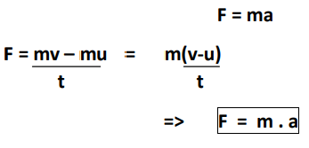
- Newton's 3rd Law of Motion: To every action thereis equal and opposite reaction which means that the forces of action and reaction between two bodies are equal in magnitude but opposite in direction.
Force: - A force is defined as the action of one body on another force is the agent which changes or tends to changes the state of rest or uniform motion of a body. A force is a vector because its effects depends on the direction as well as on the magnitude of the action on the body.
-
The S.I. unit of force is “Newton” which is denoted by (N). 1N force be define as the force which produces an acceleration of 1m/ sec 2 a body of mass 1KG.
Examples of Forces:
- Force of gravity on a body. (Also known as weight)
- Push or Pull exerted upon a body.
- Force of attraction or repulsion.
- Force of friction.
Types of Forces:
- Tensile force
- Compressive force
- Shear force
Characteristics of Force:
A force is completely defined only when the following characteristics are specified:
- Magnitude.
- Point of application.
- Line of action.
- Direction.
Newtons Law of Gravitation:
Two particle are attracted towards each other along the line connecting them with a Force
whose magnitude is proportional to the product of their masses and inversly proportional
to the square of the distance between them.

Parallelogram law(Composition of two forces):
If two forces acting at a point are represented in magnitude and direction by the
adjacent sides of a parallelogram. Then the diagonal of the parallelogram passing
through their point of intersection represent the resultant both in magnitude
and direction.
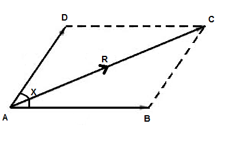
Consider two forces
F1 and
F2 acting on a particle. Let,
x be the angle between two
forces.Now, we will draw a parallelogram ABCD in which AB represent
F1 and AD represent
F2 .
According to the parallelogram law of force AC will represent the resultant.
For Resultant force we use pythagores theorem,
 AC2=AE2+CE2
R2=AE2+CE2
R2=(AB+BE)2+CE2
R2=(F1+F2cosx)2+(F2sinx)2
Angle formula:
tanx=CE/AE
tanx=CE/(AB+BE)
tanx=F2sinx/F1+F2cosx
AC2=AE2+CE2
R2=AE2+CE2
R2=(AB+BE)2+CE2
R2=(F1+F2cosx)2+(F2sinx)2
Angle formula:
tanx=CE/AE
tanx=CE/(AB+BE)
tanx=F2sinx/F1+F2cosx
| x=tan-1(F2sinx/F1+F2cosx) |
- case 1:
If the angle between the two forces is 90°.
then, R2=F12+F22
- case 2:
If the angle between the two forces is 0°.
then,R=F1+F2
- case 3:
If the angle between the two forces is 180°.
then,R=F1-F2
Q⪢ The resultant of two forces one of which is double the other is 260 N.
If the direction of the longer forces is reversed and other remain unultered
(unchanged) the resultant reduced to 180 N. Determine the magnitude of the forces
at the angle between the forces.
→ Given values,
F
1 = x
F
2 = 2x
R= 260 N
⇒ R
2= F
12 +F
22+ 2F
1F
2cosy
⇒(260)
2=x
2+(2x)
2+4x
2cosy
⇒ 67600=5x
2+4x
2cosy ----------(eq
n 1)
case 2,
F
1=x
F
2=-2x
R=180 N
⇒ R
2= F
12 +F
22+ 2F
1F
2cosy
⇒ (180)
2=x
2+(2x)
2-4x
2cosy
⇒ 32400=5x
2-4x
2cosy ----------(eq
n 2)
On adding (eq
n 1) & (eq
n 2),we get
x=100
Therefore,
F
1 = x= 100 N
F
1 = 2x = 200 N
putting value of F
1 & F
2 in (eq
n 2),
⇒ 32400=5x
2-4x
2cosy
⇒ 32400=5 x 10000 - 4 x 10000cosx
⇒ -17600=-40000cosx
⇒ cosy=17600/40000
⇒ cosy=0.44
⇒ y=63.89
Ans
Resolution of Forces:
Finding the components of a given force in two given direction is called Resolution. These components of Forces
will have the some affect on the body as the given single
Let the given forces be R and let it be required find its components in the direction making angle x and y with
its line of action. Let,
OA = F1, OB = F2,r> ∠OCA=β and ∠OAC=180°-(α+β)
Appling sine rule to ▵ OAC,
⇒ OA/sinβ=AC/sinα=OC/sin{180-(α+β)}
⇒ OA/sinβ=AC/sinα=OC/sin(α+β)
⇒ F
1/sinβ=F
2/sinα=R/sin(α+β)
∴ F
1/sinβ=R/sin(α+β)
⇒
And, F
2/sinα=R/sin(α+β)
⇒
When the force
R is resoluted along the perpendicular direction.

⇒α+β=90°
⇒β=90°-α
⇒F
1=Rsinβ/sin(α+β)
⇒F
1=Rsin(90-α) /sin{α+(90-α)}
⇒F
1=Rcosα/sin90°
⇒
Similarly,F
2=Rsinα/sin(α+β)
⇒F
2=Rsinα/sin90°
⇒
Resultant of co-planer & concurrent forces-

The resultant of a number of co-planer & concurrent forces acting on a body is
worked out by adopting step-by-step procedure.
Step 1→ Find the components of each forces in the system in two mutually
perpendicular
x and
y direction.
Step 2→ Make algebric addition of each forces or components in each
direction to get two components.
Step 3→ Obtained the resultant both magnitude and direction by combining
the two components of forces i.e.
∑Fx and
∑Fy
which are mutually perpendicular.
R²=(∑Fx)²+(∑Fy)²
tanθ=∑Fx/∑Fy
where,θ is the angle of resultant force with horizontal.
∑F
x=F
1cosθ
1 +F
2cosθ
2+
F
3cosθ
3+F
4cosθ
4.
∑F
y=F
1sinθ
1+F
2cosθ
2
+F
3cosθ
3+F
4cosθ
4
Lami's theorem-
It state that if a body is in equilibrium under the action of three forces each
force is proportional to the sine of the angle between the other two forces.
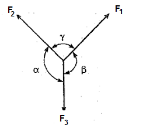
F1/sinα=F2/sinβ=F3/sinγ
Q⪢ A machine weighing 5KN supporting by two chains attached to same
point on the machine. One chain goes to the hook in the sealing and has an inclination
45° with the horizontal and the other chain goes to the eyevolt in the wall and
is inclined at 30° to the horizontal. Make calculation for tension induced in the
chain.
Sol -

from lami's theorem,
⇒T
1/sin(90°+30°)=T
2/sin(90°+45°)=W/sin(105°)
so, T
1/cos30°=5KN/sin(105°)
⇒T
1=4.48KN
Ans
And, T
2/cos45°=W/sin(105°)
⇒T
2=3.66KN
Ans
Q⪢ Find out the resultant of given forces as shown in fig.
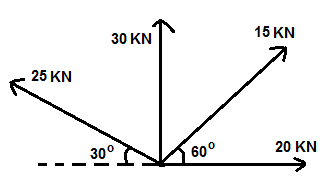
Sol -
we know that,
R²=(∑Fx)²+(∑Fy)² --------eq(1)
so, ∑F
x=20+15cos60°-25cos30°
∑F
x=5.85KN
∑F
y=30+15sin60°+25sin30°
∑F
y=55.45KN
from eq 1,
R²=(5.85)²+(55.45)²
R=55.75KN
Ans
And, tanθ= ∑F
y/ ∑F
x
θ=tan
-1(55.45/ 5.85)=83.9
Ans
Free body diagram-
The diagram showing the body free from all the other bodies in contact and showing
all the forces acting on it including selfweight and reaction from the other bodies
removed.
 Q⪢ A sphere weighing 100N is tide to a smooth wall by a string as
shown in fig. Find the tension T in the string and reaction R from the ball.
Q⪢ A sphere weighing 100N is tide to a smooth wall by a string as
shown in fig. Find the tension T in the string and reaction R from the ball.
 Sol -
Sol -
from lami's theorem,
T/sin90°=R/sin165°=W/sin150°
considering, T/sin90°=W/sin150°
⇒T=sin90°*100/sin150°=103.53N
Ans
considering, R/sin165°=W/sin150°
⇒T=sin165°*100/sin150°=26.7N
Ans
Q⪢Find the magnitude and direction of a given system of forces
as shown in the fig.
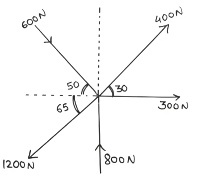
Sol -

∑F
x=0
⇒ 300+400cos30°+600cos50°-1200cos65°=0
⇒ 524.94N
∑F
y=0
⇒ 800+400sin30°-600sin50°-1200sin65°=0
⇒ -547.19N
R²=(∑F
x)²+(∑F
y)²
⇒R²=(524.94)²+(-547.19)²
⇒R=758.27N
Ans
And, tanθ= ∑F
y/ ∑F
x
⇒θ=tan
-1(-547.19/ 524.94)=46.189
Ans
Moment of force-
It is the turning effect produced by a force on the body on which it acts
where, p=force acting on the body
l=distance.
The moment of a force is equal to the product of the forces and perpendicular distance
of the point about which the moment is required and the line of the force.
Unit of the moment is Nm.
- Type of moment -
- Clockwise
- Anti-clockwise
NOTE- The general sign convention is to take Clockwise moment as +ve and Anti-clockwise
moment as -ve.
- Vanignan's theorem (principle of moment)-
The algebric sum of moment of a system of co-planer forces about a moment center is
equal to their resultant forces about the same moment center.
Q⪢The moment of given system of force about point "A" is zero then find the
value of force "P".

sol-
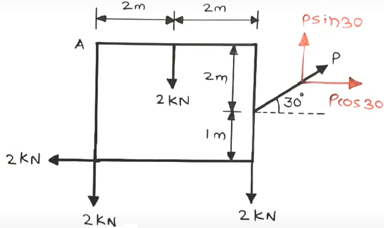
↻+ve ∑M
A=0
⇒(0x3)+(2x2)+(2x4)+(2x3)-Psin30°x4-Pcos30°x2=0
⇒4+8+6-4Psin30°-2Pcos30°=0
⇒18-2P-√3P=0
⇒3.732P=18
⇒P=4.823KN
Ans
Q⪢Calculate the moment about point B for the force system in fig.

Sol-
↻+ve ∑M
B= 0+(10x3)-(20x2)-(30x3)+(30x2)
=30-40-90+60
=-40KNm
OR 40KNm(Anti-clockwise).
Ans
Q⪢A force of 1200N acts on a braket find the moment of a force about 'A'

Sol-

↻+ve ∑M
A=(-1200sin30° x 140)+(1200cos30° x 120)
=(-1200 x 1/2 x 140)+ (1200 x √3/2 x 120)
=-84000 + 124707.658
=40707.658Nmm
OR 40707.658Nmm(Clockwise).
Ans
Q⪢Find the algebric sum of moment of all the forces as shown in fig. about 'C'
Consider AB=BC=CA=1m
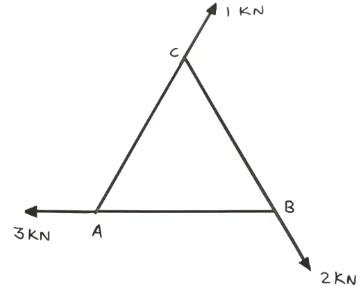
Sol-

we know that,
sin60°=p/h=p/1
∴ p=√3/2=0.866m
So, ↻+ve∑M
C=(3 x 0.866)+0+0
=2.598KNm
Ans
Equilibrium-
Types of support-
- Simple support-
The end of the beam rest on a rigid support.

- Roller support-
In this case beam end is support on the roller. In such cases reaction is always normal to the
support.

- Hinged or pinned support-
In such cases the position of the end of the beam is fixed but the end is freed to rotate.

- Fixed support-
At fixed support the end of beam is neither permited to move in any direction nor allow to rotate.
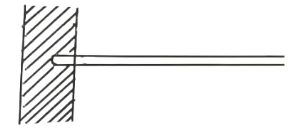
Type of beam-
- Cantilever-
- Simply supported beam-
Q⪢Find the reaction at support 'A'and 'B' for the beam shown in fig.

Sol-
Free body diagram of beam AB,

⇒→+ve∑F
x = 0
⇒R
AH-8cos30° = 0
⇒R
AH = 8 x √3/2
⇒R
AH = 6.928KN
Ans
⇒↑+ve∑F
y = 0
⇒R
Av-8sin30°-4+R
B = 0
⇒R
AV+R
B-8= 0 --------eq1
⇒↻+ve ∑M
A = 0
⇒(8sin30° x 3)+(4x6)-(R
B x 8) = 0
⇒12+24-8R
B = 0
⇒R
B = 36/8 =4.5KN
Ans
putting R
B in eq1,
⇒R
AV = 3.5KN
Ans
Q⪢Find the reaction at support 'A'and 'B' for the beam shown in fig.

Sol-
Free body diagram of beam AB,
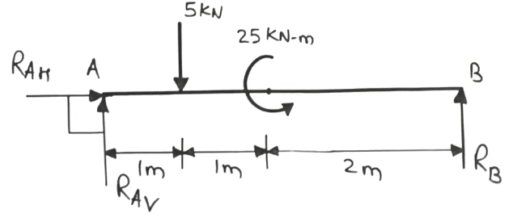
uniform distributed load = bxh
= 2m x 4KN/m
= 8KN
And, b/2=1m (distance)
⇒→+ve∑F
x = 0
∴ R
AH = 0
Ans
⇒↑+ve∑F
y = 0
⇒ R
AV-5-8+R
B = 0
⇒R
AV+R
B = 13 --------eq1
⇒↻+ve ∑M
A = 0
⇒(5x1)+(8x3)-(R
B x 4)-25 = 0
⇒5+2-4R
B-25 = 0
⇒4-4R
B = 0
⇒R
B = 1KN
Ans
putting R
B in eq1,
∴R
AV+1 = 13
⇒ R
AV = 12KN
Ans
Q⪢Find the reaction at support 'A'and 'B' for the beam shown in fig.

Sol-
Free body diagram of beam ABC,

uniform varing load = 1/2 xbxh
=1/2 x3x6
=9KN
And, b/3=3/3=1m(distance)
⇒→+ve∑F
x = 0
∴ R
AH = 0
Ans
⇒↑+ve∑F
y = 0
⇒ R
AV-9+R
B-4 = 0
⇒R
AV+R
B = 13 --------eq1
⇒↻+ve ∑M
A = 0
⇒(9x3)-(4x6)-(R
B x 5) = 0
⇒27-5R
B+24 = 0
⇒ -5R
B+51 = 0
⇒R
B = 51/5 = 10.2KN
Ans
putting R
B in eq1,
∴R
AV+10.2 = 13
⇒ R
AV = 2.8KN
Ans
Q⪢Find the value of support reaction, when reaction at A will be
double that of B. Find 'X' weight of 1st and 2st sphere is 1800N and 600N
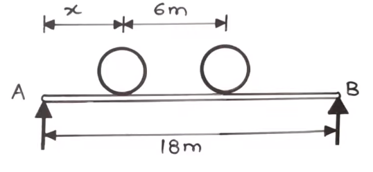
Sol-
Free body diagram of beam AB,

Given that, R
A = 2R
B
⇒↑+ve∑F
y = 0
⇒ R
A-1800-600+R
B = 0
⇒ 2R
B+R
B-2400 = 0
⇒ 3R
B = 2400
⇒ R
B = 800N
∴ R
A = 2R
B = 2x800 = 1600N
⇒↻+ve ∑M
A = 0
⇒ 0+(1800 x X;)-{600x(6+X)}-(R
B x18) = 0
⇒1800X + 3600 + 600X - (800x18) = 0
⇒ 2400X - 10800 = 0
⇒ X = 10800/2400 = 4.5m
Ans
Q⪢Calculate support reaction for the beam loaded as shown.
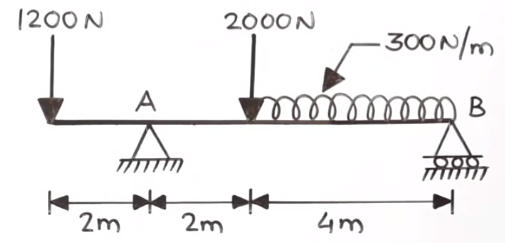
Sol-
Free body diagram of beam AB,
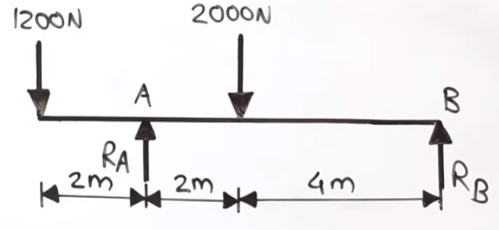
uniform distributed load = bxh
=4x300
=1200KN
And, b/2=4/2=2m(distance)
⇒↑+ve∑F
y = 0
⇒ R
A-1200-2000-1200+R
B = 0
⇒R
A-4400+R
B = 0
⇒R
A+R
B = 4400N --------eq1
⇒↻+ve ∑M
A = 0
⇒ 0 -(1200x2)-(2000x4)+(R
A x 6)-(1200x8) = 0
⇒ -2400-8000+6R
A-9600 = 0
⇒ 6R
A = 20000
⇒ R
A = 20000/6 = 3333.34N
Ans
putting R
A in eq1,
∴R
B+3333.34 = 4400
⇒ R
B = 666.67N
Ans
Q⪢A horizontal force 'P' is as shown in fig. keeps the weight of 100N
is in equilibrium. Find the magnitude of force 'P' and the tension in the string.

Sol -
Free body diagram,

from lami's theorem,
⇒ P/sin(170°) = T/sin(90°) = W/sin(100°)
on comparing,
⇒ T/sin90° = W/sin100°
⇒T=101.542N
Ans
on comparing,
⇒p/sin170° = w/sin100°
⇒P = 17.632N
Ans
Q⪢Calculate the tension in the string AB & AC, if the weight of 200N is
attached by the two string as shown in fig.
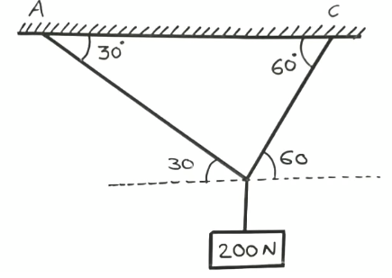
Sol -
Free body diagram,
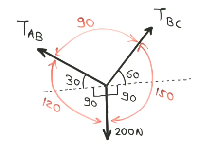
from lami's theorem,
⇒ T
AB/sin(150°) = T
AC/sin(120°) = 200/sin(100°)
on comparing,
⇒T
AB/sin(150°) = 200/sin(100°)
⇒ T
AB = 100N
Ans
on comparing,
⇒T
AC/sin(120°) = 200/sin(100°)
⇒ T
AC = 173.205N
Ans
Q⪢ Three bars are pinned together at B & C and supported by a hinged at
A & D as shown in fig. to form a 4 link mechanism. Determine the value of 4 link that
will prevent the motion.

Sol -
Free body diagram at joint B,
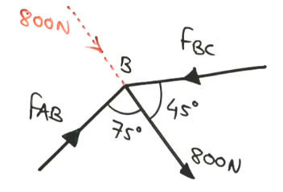

From lami's theorem,
⇒ F
AB/sin(135°) = F
BC/sin(105°) = 800/sin(120°)
on comparing,
⇒ F
BC/sin(105°) = 800/sin(120°)
⇒ F
BC = 892.284N
Free body diagram at joint C,


⇒ F
BC/sin(135°) = F
CD/sin(120°)=P/sin(105°)
on comparing,
⇒ F
BC/sin(135°) = P/sin(105°)
⇒ P = 1218.882N
Ans
Q⪢ Two equal load of 2500N are supported by a flexible string ABCD at
point B and C. Find the tension in the portion AB, BC and CD of string.
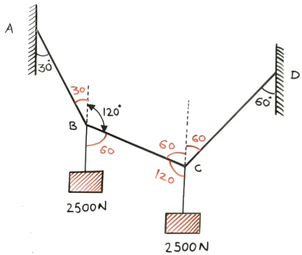
Sol -
Free body diagram at joint B,
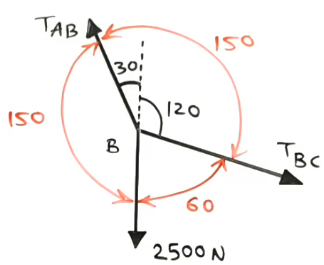
From lami's theorem,
⇒ T
AB/sin(60°) = T
BC/sin(150°) = 2500/sin(150°)
on comparing,
⇒ T
AB/sin(60°) = 2500/sin(150°)
⇒ T
AB = 4330.127N
Ans
on comparing,
⇒ T
BC/sin(60°) = 2500/sin(150°)
⇒ T
BC = 2500N
Ans
Free body diagram at joint C,

⇒ T
BC/sin(120°) = T
CD/sin(120°)=2500/sin(120°)
on comparing,
⇒ T
CD/sin(120°) = 2500/sin(120°)
⇒ T
CD = 2500N
Ans
Q⪢ An electric bulb weight 15N hangs from C by two string AC & BC. The
string AC is inclined at 60° to the horizontal & BC at 45° to the vertical as
shown in fig. the string AC & BC.

Sol -
Free body diagram,
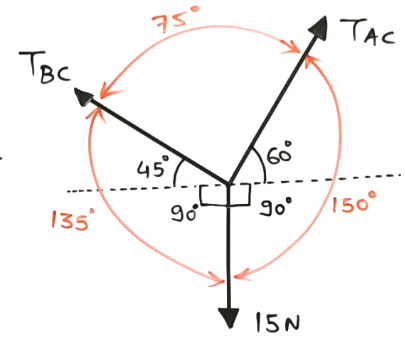
From lami's theorem,
⇒ F
AC/sin(135°) = F
BC/sin(150°) = 15/sin(75°)
on comparing,
⇒ F
AC/sin(135°) = 15/sin(75°)
⇒ F
AC = 10.98N
on comparing,
⇒ F
BC/sin(150°) = 15/sin(75°)
⇒ F
BC = 7.764N
Centroid & centre of gravity -
Centre of gravity -
A body is compose of no. of particle is attracted by forces, due to gravity of Earth towards
its centre since the body is negligible as compared to the Earth all forces are consider to
be parallel with the resultant. The resultant of this force is known as centre of gravity.
Centre of gravity of a body is define as the point which resultant of the gravitational
force (weight) act for an orientation of the body.
Centroid -
The Centroid is referred as geometrical centre of a uniform density body. This means the
object has its weight distributed equally across all body parts. If the body is homogeneous
(having constant density), its centre of gravity equivallent to the centroid.
Difference between centre of gravity and centroid -
| Centre of gravity |
Centroid |
| The point where the total weight of the body focuses upon. |
It is referred to as the geometrical centre of a body. |
| It is the point where the gravitational force (weight) acts on the body. |
It is referred to the centre of gravity of uniform density objects. |
| It is denoted by g. |
It is denoted by c. |
| Centre of Gravity in a uniform gravitational field is the average of all points,
weighted by local density or specific weight. |
The centroid is a point in a plane area in such a way that the moment of area about
any axis throughout that point is 0. |
| It is a physical behaviour of the object, a point where all the weight of an object is
acting. |
It is a geometrical behaviour. It is the centre of measure of the amount of geometry. |
Centre of gravity formula -
-
Cylinder -

volume = πr²h
x = r
y = h/2
-
Cone -
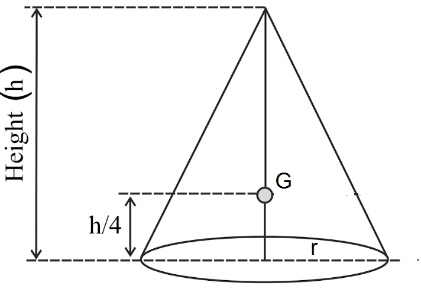
volume = 1/3πr²h
x = r
y = h/4
-
Sphere -
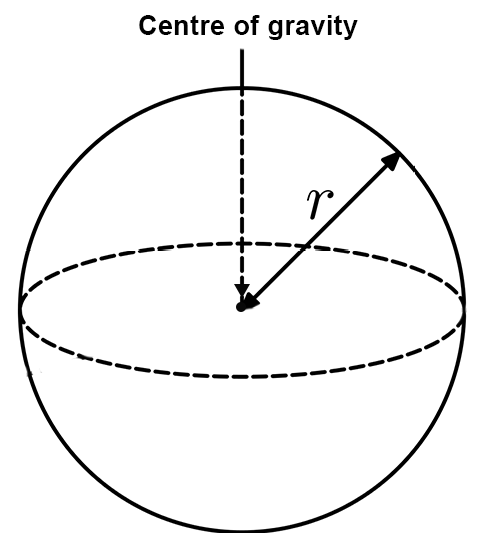
volume = 4/3πr³
x = r
y = r
-
Hemisphere -
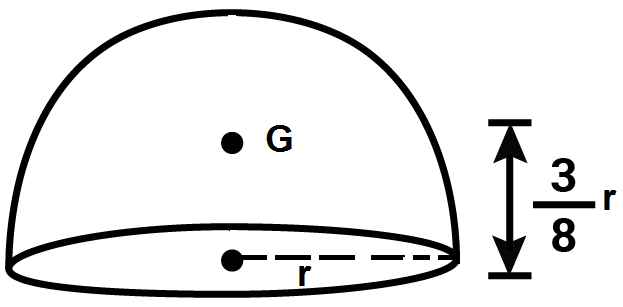
volume = 2/3πr³
x = r
y = 3r/8
-
Cube -

volume = a³
x = a/2
y = a/2
Q⪢ A right circular cone of base diameter 100mm and height 200mm is place on the hemisphere
of the same diameter. Calculate its centre of gravity.

sol-
| S.no. |
Solid |
Volume(V)(mm3) |
x(mm) |
y(mm) |
Vx(mm4) |
Vy(mm4) |
| 1 |
 |
523598.775
= 5.235 x 105 |
50 |
100 |
26179938.75
= 26.179 x 105 |
52359877.5
= 52.359 x 106 |
| 2 |
 |
261799.387
=2.617 x 105 |
50 |
31.25 |
13089969.35
= 13.089 x 105 |
8181230.844
= 81.812 x 105 |
|
∑ V = 785398.162 |
|
∑Vx = 39269908.1 |
∑Vy = 60541102.34 |
So, X = ∑Vx/∑V = 39269908.1/785398.162 = 50mm
And, Y = ∑Vy/∑V = 60541102.34/785398.162 = 77.083mm
∴ Centre of gravity, G = (x,y) = (50,77.083) Ans
Q⪢A solid cone having base diameter 150mm and height 150mm is
placed on top of cylinder diameter 150mm and height 200mm, such that axis are
co-liner. Locate center of gravity with respect to bottom.
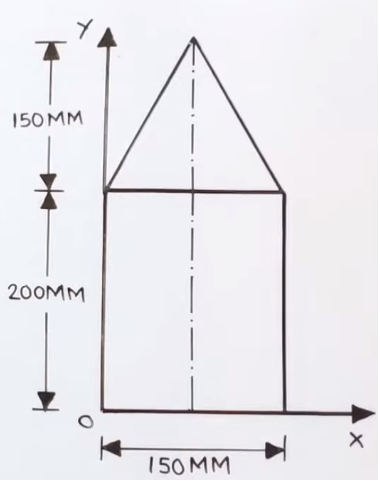
sol-
| S.no. |
Solid |
Volume(V)(mm3) |
x(mm) |
y(mm) |
Vx(mm4) |
Vy(mm4) |
| 1 |
 |
3.534 x 106 |
75 |
100 |
265.05 x 106 |
353.4 x 106 |
| 2 |
|
883.57 x 105 |
75 |
237.5 |
66.267 x 105 |
209.847 x 105 |
|
∑ V = 4.417 x 106 |
|
∑Vx = 331.317 x 106 |
∑Vy = 563.247 x 106 |
So, X = ∑Vx/∑V = 331.317 x 106/4.417 x 106 = 75mm
And, Y = ∑Vy/∑V = 563.247 x 6/4.417 x 106 = 127.5mm
∴ Centre of gravity, G = (x,y) = (75,127.5) Ans
Q⪢Find the centre of gravity of composite body show in fig.

sol-
| S.no. |
Solid |
Volume(V)(cm3) |
x(cm) |
y(cm) |
Vx(cm4) |
Vy(cm4) |
| 1 |
|
18.85 |
2.5 |
3 |
47.125 |
56.55 |
| 2 |
 |
39.27 |
2.5 |
7 |
98.175 |
274.89 |
|
∑ V = 58.12 |
|
∑Vx = 145.3 |
∑Vy = 331.44 |
So, X = ∑Vx/∑V = 145.3/58.12 = 2.5cm
And, Y = ∑Vy/∑V = 331.44/58.12 = 5.702cm
∴ Centre of gravity, G = (x,y) = (2.5,5.702) Ans
Q⪢A solid cone having base diameter 150mm and height 150mm is
placed on top of cylinder diameter 150mm and height 200mm, such that axis are
co-liner. Locate center of gravity with respect to bottom.
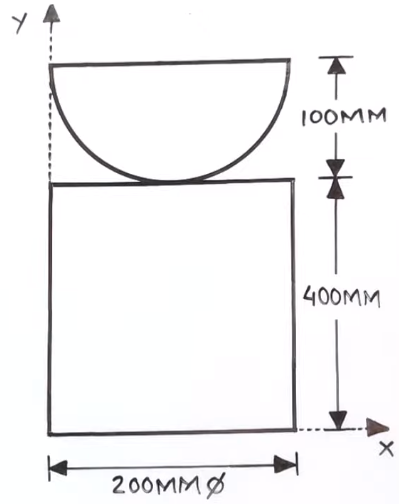
sol-
| S.no. |
Solid |
Volume(V)(mm3) |
x(mm) |
y(mm) |
Vx(mm4) |
Vy(mm4) |
| 1 |
|
2.094 x 106 |
100 |
462.5 |
209.4 x 106 |
968.475 x 106 |
| 2 |
|
12.566 x 106 |
100 |
200 |
1.2566 x 109 |
2.5132 x 109 |
|
∑ V = 14.66 x 106 |
|
∑Vx = 1.466 x 109 |
∑Vy = 3.4816 x 109 |
So, X = ∑Vx/∑V = 1.466 x 109/14.66 x 106 = 100mm
And, Y = ∑Vy/∑V = 3.4816 x 9/14.66 x 106 = 237.489mm
∴ Centre of gravity, G = (x,y) = (100,237.489) Ans
Centroid formula -
Rectangle -

Right Angle Tringle-
\

Semi Circle-
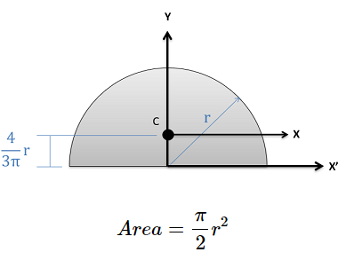
Quatrant of Circle-
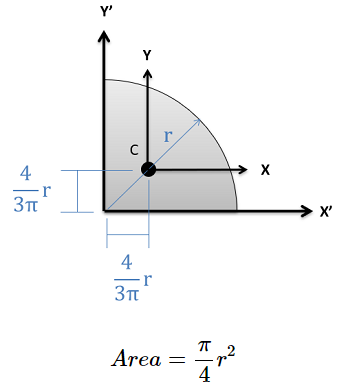
Q⪢Locate the Centroid for the given shape with respect to the
reference x and y axis.
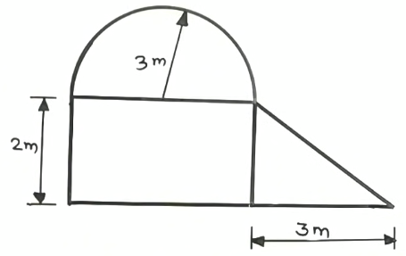
sol-
| S.no. |
Shape |
Area(A)(m2) |
x(m) |
y(m) |
Ax(m3) |
Ay(m3) |
| 1 |
|
12 |
3 |
1 |
36 |
12 |
| 2 |
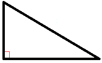 |
3 |
7 |
0.666 |
21 |
1.998 |
| 3 |
 |
14.137 |
3 |
3.273 |
43.411 |
46.27 |
|
∑A = 29.137 |
|
∑Ax = 99.411 |
∑Ay = 60.268 |
So, X = ∑Ax/∑A = 99.411/29.137 = 3.411m
And, Y = ∑Ay/∑A = 60.268/29.137 = 2.068m
∴ Centroid, C = (x,y) = (3.411,2.068) Ans
Q⪢Locate the Centroid for the given shape with respect to the
reference x and y axis.
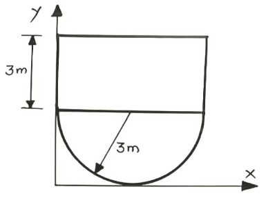
sol-
| S.no. |
Shape |
Area(A)(m2) |
x(m) |
y(m) |
Ax(m3) |
Ay(m3) |
| 1 |
|
18 |
3 |
4.5 |
54 |
81 |
| 2 |
|
14.137 |
3 |
1.726 |
42.411 |
24.4 |
|
∑A = 32.137 |
|
∑Ax = 96.411 |
∑Ay = 105.4 |
So, X = ∑Ax/∑A = 96.411/32.137 = 3m
And, Y = ∑Ay/∑A = 105.4/32.137 = 3.279m
∴ Centroid, C = (x,y) = (3,3.279) Ans
Q⪢Locate the Centroid for the given shape with respect to the
reference x and y axis.

sol-
| S.no. |
Shape |
Area(A)(m2) |
x(m) |
y(m) |
Ax(m3) |
Ay(m3) |
| 1 |
 |
7.068 |
1.273 |
7.273 |
8.997 |
51.405 |
| 2 |
 |
9 |
1 |
4 |
9 |
36 |
|
∑A = 16.068 |
|
∑Ax = 17.997 |
∑Ay = 87.405 |
So, X = ∑Ax/∑A = 17.997/16.068 = 1.12m
And, Y = ∑Ay/∑A = 87.405/16.068 = 5.439m
∴ Centroid, C = (x,y) = (1.12,5.439) Ans
Q⪢Locate the Centroid for the given shape with respect to the
reference x and y axis.

sol-
| S.no. |
Shape |
Area(A)(m2) |
x(m) |
y(m) |
Ax(m3) |
Ay(m3) |
| 1 |
|
9 |
4 |
2 |
36 |
18 |
| 2 |
 |
14.137 |
1.726 |
3 |
24.4 |
42.411 |
|
∑A = 23.137 |
|
∑Ax = 60.4 |
∑Ay = 60.411 |
So, X = ∑Ax/∑A = 60.4/23.137 = 2.61m
And, Y = ∑Ay/∑A = 60.411/23.137 = 2.611m
∴ Centroid, C = (x,y) = (2.61,2.611) Ans
Q⪢Locate the Centroid for the given shape with respect to the
reference x and y axis.

sol-
| S.no. |
Shape |
Area(A)(cm2) |
x(cm) |
y(cm) |
Ax(cm3) |
Ay(cm3) |
| 1 |
|
1800 |
45 |
130 |
81000 |
234000 |
| 2 |
|
1800 |
45 |
75 |
81000 |
135000 |
| 3 |
|
2100 |
45 |
15 |
94500 |
31500 |
|
∑A = 5700 |
|
∑Ax = 256500 |
∑Ay = 400500 |
So, X = ∑Ax/∑A = 256500/5700 = 45cm
And, Y = ∑Ay/∑A = 400500/5700 = 70.263cm
∴ Centroid, C = (x,y) = (45,70.263) Ans
Q⪢Find the Centroid of the shaded part with respect to the
reference x and y axis.

sol-
| S.no. |
Shape |
Area(A)(m2) |
x(m) |
y(m) |
Ax(m3) |
Ay(m3) |
| 1 |
|
18 |
1.5 |
3 |
27 |
54 |
| 2 |
|
9 |
4 |
2 |
36 |
18 |
| 3 |
 |
-14.137 |
1.273 |
3 |
-17.996 |
-42.411 |
|
∑A = 12.863 |
|
∑Ax = 45.004 |
∑Ay = 29.589 |
So, X = ∑Ax/∑A = 45.004/12.863 = 3.498m
And, Y = ∑Ay/∑A = 29.589/12.863 = 2.3m
∴ Centroid, C = (x,y) = (3.498,2.3) Ans
Q⪢Find the Centroid of the shaded part with respect to the
reference x and y axis.

sol-
| S.no. |
Shape |
Area(A)(cm2) |
x(cm) |
y(cm) |
Ax(cm3) |
Ay(cm3) |
| 1 |
 |
24 |
5.333 |
2 |
127.992 |
48 |
| 2 |
 |
36 |
11 |
3 |
396 |
108 |
| 3 |
 |
-28.274 |
11.453 |
2.546 |
-323.822 |
-71.985 |
|
∑A = 31.726 |
|
∑Ax = 200.17 |
∑Ay = 84.015 |
So, X = ∑Ax/∑A = 200.17/31.726 = 6.309cm
And, Y = ∑Ay/∑A = 84.015/31.726 = 2.648cm
∴ Centroid, C = (x,y) = (6.309,2.648) Ans
Q⪢Find the Centroid of the shaded part with respect to the
reference x and y axis.

sol-
| S.no. |
Shape |
Area(A)(mm2) |
x(mm) |
y(mm) |
Ax(mm3) |
Ay(mm3) |
| 1 |
|
6000 |
50 |
30 |
300000
= 3 x 105 |
180000
= 18 x 104 |
| 2 |
|
2500 |
50 |
76.666 |
125000
= 125 x 103 |
191665
= 191.665 x 103 |
| 3 |
|
-2827.433 |
74.536 |
25.464 |
-210745.546
= -210.745 x 103 |
-71997.753
= -71.997 x 103 |
|
∑A = 5672.567 |
|
∑Ax = 214254.454 |
∑Ay = 299667.247 |
So, X = ∑Ax/∑A = 214254.454/5672.567 = 37.77mm
And, Y = ∑Ay/∑A = 299667.247/5672.567 = 52.827mm
∴ Centroid, C = (x,y) = (37.77,52.827) Ans
Q⪢Find the Centroid of the shaded part with respect to the
reference x and y axis.

sol-
| S.no. |
Shape |
Area(A)(mm2) |
x(mm) |
y(mm) |
Ax(mm3) |
Ay(mm3) |
| 1 |
|
20000 |
100 |
50 |
2000000
= 2 x 106 |
1000000
= 1 x 106 |
| 2 |
|
5000 |
133.333 |
116.666 |
666665
= 6.666 x 105 |
523330
= 5.833 x 105 |
| 3 |
|
-3926.99 |
150 |
21.22 |
-589048.5
= -5.890 x 105 |
-83330.727
= -83.33 x 103 |
|
∑A = 21073.01 |
|
∑Ax = 2077616.5 |
∑Ay = 1499999.273 |
So, X = ∑Ax/∑A = 2077616.5/21073.01 = 98.591mm
And, Y = ∑Ay/∑A = 1499999.273/21073.01 = 71.181mm
∴ Centroid, C = (x,y) = (98.591,71.181) Ans
Q⪢Find the Centroid of the given shape with respect to the
reference x and y axis.
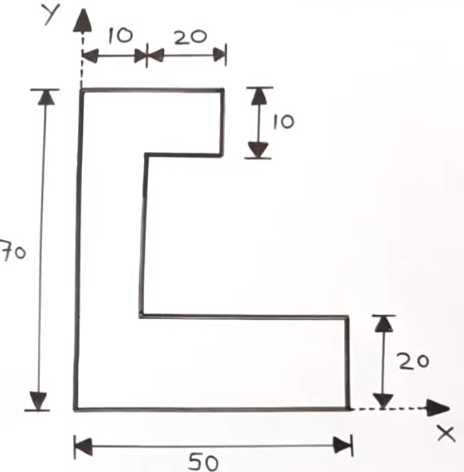
sol-
| S.no. |
Shape |
Area(A)(cm2) |
x(cm) |
y(cm) |
Ax(cm3) |
Ay(cm3) |
| 1 |
|
700 |
5 |
35 |
3500 |
24500 |
| 2 |
|
800 |
30 |
10 |
24000 |
8000 |
| 3 |
|
200 |
20 |
65 |
4000 |
13000 |
|
∑A = 1700 |
|
∑Ax = 31500 |
∑Ay = 45500 |
So, X = ∑Ax/∑A = 31500/1700 = 18.529cm
And, Y = ∑Ay/∑A = 455500/1700 = 26.764cm
∴ Centroid, C = (x,y) = (18.529,26.764) Ans
Q⪢Find the Centroid of the given shape with respect to the
reference x and y axis.

sol-
| S.no. |
Shape |
Area(A)(mm2) |
x(mm) |
y(mm) |
Ax(mm3) |
Ay(mm3) |
| 1 |
|
1200 |
60 |
5 |
72000 |
6000 |
| 2 |
|
1536 |
60 |
74 |
92160 |
113664 |
| 3 |
|
960 |
60 |
144 |
57600 |
138240 |
|
∑A = 3696 |
|
∑Ax = 221760 |
∑Ay = 257904 |
So, X = ∑Ax/∑A = 221760/3696 = 60mm
And, Y = ∑Ay/∑A = 257904/3696 = 69.779mm
∴ Centroid, C = (x,y) = (60,69.779) Ans
Q⪢Find the Centroid of the shaded part with respect to the
reference x and y axis.

sol-
| S.no. |
Shape |
Area(A)(Cm2) |
x(Cm) |
y(Cm) |
Ax(Cm3) |
Ay(Cm3) |
| 1 |
|
300 |
10 |
7.5 |
3000 |
2250 |
| 2 |
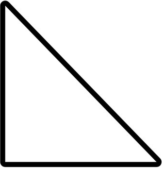 |
75 |
23.333 |
5 |
1749.975 |
375 |
| 3 |
|
-157.07 |
10 |
4.244 |
-1570.7 |
-666.605 |
|
∑A = 217.93 |
|
∑Ax = 3179.275 |
∑Ay = 1958.395 |
So, X = ∑Ax/∑A = 3179.275/217.93 = 14.588cm
And, Y = ∑Ay/∑A = 1958.395/217.93 = 8.986cm
∴ Centroid, C = (x,y) = (14.588,8.986) Ans
Q⪢Find the Centroid of the shaded part with respect to the
reference x and y axis.
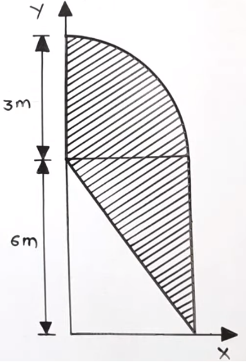
sol-
| S.no. |
Shape |
Area(A)(m2) |
x(m) |
y(m) |
Ax(m3) |
Ay(m3) |
| 1 |
|
7.068 |
1.273 |
7.273 |
8.997 |
51.405 |
| 2 |
 |
9 |
2 |
4 |
18 |
36 |
|
∑A = 16.068 |
|
∑Ax = 26.997 |
∑Ay = 87.405 |
So, X = ∑Ax/∑A = 26.997/16.068 = 1.68m
And, Y = ∑Ay/∑A = 87.405/16.068 = 5.439m
∴ Centroid, C = (x,y) = (1.68,5.439) Ans
Q⪢Find the Centroid of the shaded part with respect to the
reference x and y axis.

sol-
| S.no. |
Shape |
Area(A)(cm2) |
x(cm) |
y(cm) |
Ax(cm3) |
Ay(cm3) |
| 1 |
|
36 |
4 |
8 |
144 |
288 |
| 2 |
|
72 |
6 |
3 |
432 |
216 |
| 3 |
|
-36 |
6 |
2 |
-216 |
-72 |
|
∑A = 72 |
|
∑Ax = 360 |
∑Ay = 432 |
So, X = ∑Ax/∑A = 360/72 = 5cm
And, Y = ∑Ay/∑A = 432/72 = 6m
∴ Centroid, C = (x,y) = (5,6) Ans
Moment of Inertia -
The moment of force (1st moment of force) about any point is given by
Mf = F x r
where, F = force.
r = perpendicular distance from reference point O.
The 2nd moment of inertia in given by
Ms = Mf
Ms = F x r x r
Ms = Fr2
If instead of force F the area of figure is condered it is called Second moment of inertia
and in general it is termed as moment of inertia and commonly denoted by I.
Moment of inertia of a plane areas = Ar2
Moment of inertia of a body = mr2
Where, A and m respectively denote the area and mass of the body.
Inertia refers to the property of a body by virtue of which the body resist any change
in its state of rest or of uniform motion. Area moment of inertia is essentially a measure
of resistance to bending and its applied while dealing with the deflection or defomotion
of member in bending.
The mass moment of inertia gives a measure of the resistance that body offers to change
in angular velocity and Accordingly is used inconjuction with rotation of rigid bodies.
Moment of Inertia of an Area -
Consider an Area ABCDA (regular & irregular) situated in the space where axis xx' is
located as shown in the figure.
Consider an element area dA which is located at distance y from xx' axis. Then the
moment of inertia of dA about xx' axis is given by
dI = dAxy2
Therefore, total moment of inertia is given by,
∫dI = ∫dAxy2
Thus, the moment of inertia of an area about the given axis is the sum of moment of
inertia of an elementary area constuting the given area about the given axis.
Moment of inertia of an Rectangular lemane -
A Rectangle of b x d as shown in figure and xx and yy axis located in passing through
the centre of gravity of Rectangular lemuna.
Consider an element area of thickness by at a distance y from xx axis, then the
moment of inertia of an element area is given by,
dI = dAxy2
dI = (bxdy)y2
Ixx = -d/2∫d/2(bxdy)y2
Ixx = bd3/12
Similarly, Iyy = db3/12
Theorem of perpendicular axis -
It states if Ixx be the moment of inertia of a plane section about to perpendicular
axis meeting at point 'O'. The moment of inertia I about the axis Izz perpendicular
to the plane and passing through the intersection of xx and yy is given by
Izz = Ixx + Iyy

Consider an area dA from total area A located in the 3D and whose coordinate are x and y
in the xy plane and its distance from zz-axis is r as shown in fig.
r2 = x2 + y2
and, dIzz = dAr2
dIzz = dA(x2 + y2)
dIzz = dAx2 + dAy2
∴ ∑dAx2 = Ixx
and, ∑dAy2 = Iyy
∴ Izz = Ixx + Iyy
Theorem of parallel axis -
This theorem states that the moment of inertia of an area about non-centroidal axis is
equal to the moment of inertia of an area about its centre of gravity axis which is
parallel to the non-centroidal axis plus the product of area and square of the distance
between the referred axis passing through centre of gravity and parallel of the referred
axis.
the moment of inertia dA about xx is given by,
Ixx = ∫dA(h+y)2
Ixx = ∫dAy2 + ∫dAh2 + ∫dA2hy
Ixx = Iyy + h2A + 2h∫dAy
Ixx = Iyy + h2A + 2hAy
where y is the distance of centre of gravity of area PQRS from gg-axis as gg passes
through centre of gravity of area PQRS.
∴ Ixx = Iyy + h2A
Formula of Moment of Inertia -
Rectangle -
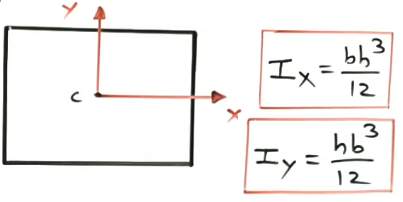
Triangle -

Circle -
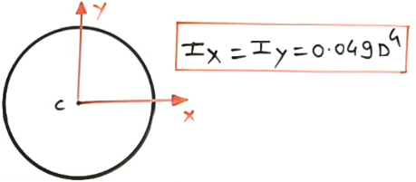
Quarter circle -
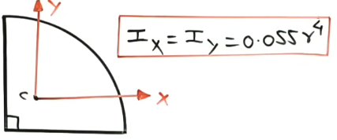
Semi circle -


Q⪢Find the moment of inertia for the given shape w.r.t. X and Y axis.
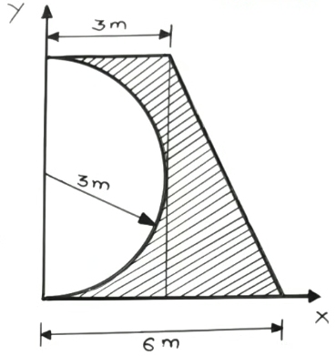
Sol -

A = 18m2
x = 1.5m
Y = 3m
Ix1 = bh3/12 = 3x(6)3/12 = 54m4
Iy1 = b3h/12 = 6x(3)3/12 = 13.5m4
Ixx1 = Ix1 + Al2
Ixx1 = 54 + 18x(3)2 = 216m4
Iyy1 = Iy 1 + Al2
Iyy1 = 13.5 + 18x(1.5)2 = 54m4
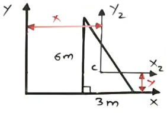
A = 9m2
x = 4m
Y = 2m
Ix2 = bh3/36 = 3x(6)3/36 = 18m4
Iy2 = b3h/36 = 6x(3)3/36 = 4.5m4
Ixx2 = Ix2 + Al2
Ixx2 = 18 + 9x(2)2= 54m4
Iyy2 = Iy2 + Al2
Iyy2 = 4.5 + 9x(4)2= 148.5m4

A = 14.137m2
x = 1.273m
Y = 3m
Ix3 = 0.392r4 = 0392x(3)4 = 31.752m4
Iy3 = 0.11r4 = 0.11x(3)4 = 8.91m4
Ixx3 = Ix3 + Al2
Ixx2 = 31.752 + 14.137x(3)2 = 158.985m4
Iyy3 = Iy3 + Al2
Iyy3 = 8.91 + 14.137x(1.273)2 = 31.819m4
Ix = Ixx 1 + Ixx2 - Ixx3
Ix = 216 + 54 - 158.985
Ix = 111.015m4 Ans
Iy = Iyy 1 + Iyy2 - Iyy3
Iy = 54 + 148.5 - 31.819
Iy = 170.681m4 Ans
Q⪢Find the moment of inertia for the given shape w.r.t. X and Y axis.

Sol -

A = 750cm2
x = 5cm
Y = 37.5cm
Ix1 = bh3/12 = 10x(75)3/12 = 351562.5cm4
Iy1 = b3h/12 = 75x(10)3/12 = 6250cm4
Ixx1 = Ix1 + Al2
Ixx2 = 351562.5 + 750x(37.5)2 = 1406250cm4
Iyy1 = Iy1 + Al2
Iyy1 = 6250 + 750x(5)2 = 25000cm4

A = 675cm2
x = 20cm
Y = 45cm
Ix2 = bh3/36 = 30x(45)3/36 = 75937.5cm4
Iy2 = b3h/36 = 45x(30)3/36 = 33750cm4
Ixx2 = Ix2 + Al2
Ixx2 = 75937.5 + 675x(45)2 = 1442812.5cm4
Iyy2 = Iy2 + Al2
Iyy2 = 33750 + 675x(20)2 = 303750cm4
Ix = Ixx1 + Ixx2
Ix = 1406250 + 1442812.5
Ix = 2849062.5cm4
Iy = Iyy1 + Iyy2
Iy = 25000 + 303750
Iy = 328750cm4
Q⪢Find the moment of inertia for the given shape w.r.t. X and Y axis.
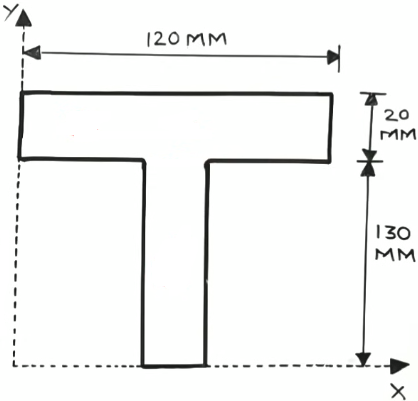
Sol -

A = 2400mm2
x = 60mm
Y= 140mm
Ix1= bh3/12 = 120x(20)3/12 = 8x104mm4
Iy1= b3h/12 = 20x(120)3/12 = 288x104mm4
Ixx1 = Ix1 + Al2
Ixx1 = 8x104 + 2400x(140)2 = 47.12x106mm4
Iyy1= Iy1 + Al2
Iyy1 = 288x104 + 2400x(60)2 = 11.52x106mm4
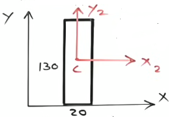
A = 2600mm2
x = 60mm
Y= 65mm
Ix2 = bh3/12 = 20x(130)3/12 = 3.661x106mm4
Iy2= b3h/12 = 130x(20)3/12 = 86.666x103mm4
Ixx2= Ix2 + Al2
Ixx2= 3.661x106 + 2600x(65)2= 14.646x106mm4
Iyy2 = Iy2 + Al2
Iyy2= 86.666x103 + 2600x(60)2= 9.446x106mm4
Ix = Ixx 1 + Ixx2
Ix = 47.12x106 + 14.646x106
Ix = 61.766x106mm4 Ans
Iy = Iyy 1 + Iyy2
Iy = 11.52x106 + 9.446x106
Iy = 20.966x106mm4 Ans
Q⪢Find the moment of inertia for the given L section about X and Y axis.
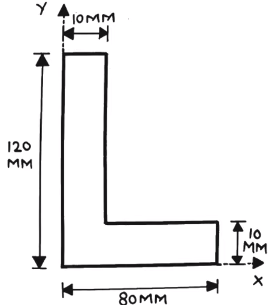
Sol -

A = 700mm2
x = 45mm
Y= 5mm
Ix1= bh3/12 = 70x(10)3/12 = 5.833x103mm4
Iy1= b3h/12 = 10x(70)3/12 = 285.833x103mm4
Ixx1 = Ix1 + Al2
Ixx1 = 5.833x103 + 700x(5)2 = 23.333x103mm4
Iyy1 = Iy1 + Al2
Iyy1 = 285.833x103 + 700x(45)2 = 1703.333x103mm4

A = 1200mm2
x = 5mm
Y= 60mm
Ix2 = bh3/12 = 10x(120)3/12 = 1.44x106mm4
Iy2= b3h/12 = 120x(10)3/12 = 10x103mm4
Ixx2= Ix2 + Al2
Ixx2= 1.44x106 + 1200x(60)2= 5.76x106mm4
Iyy2 = Iy2 + Al2
Iyy2= 10x103 + 1200x(5)2= 40x103mm4
Ix = Ixx 1 + Ixx2
Ix = 23.333x103 + 5.76x106
Ix = 5.783x106mm4 Ans
Iy = Iyy 1 + Iyy2
Iy = 1703.333x103 + 40x103
Iy = 1.7433x106mm4 Ans
Friction -
When a body slides towards another body a force is exerted at the surface of contact by the
stationary body on the moving body. This resisting force is called the force of friction
and acts in opposite direction of motion.
Friction is quite undesireable and needs to be mitigrated in same machine and process such
as power fuse. So, bearing and gears, flow of fluids in pipe.
It presents good cause loss of power, wearing out of parts and huge economic losses. However,
the working of many devices such as friction breaks and clutch, belt and rope drives,
hoilding and fastening devices.
Statics and dynamic friction -
Statics friction is the frictional force that develops between mating surfaces when subjected to external
forces but there is no relative motion between them.
The Dynamic friction is the frictional force that develops between mating surfaces subjected to external
forces and there is relative motion between them. The Dynamic friction is also known as Kinetic friction.
The Kinetic friction is always somewhat less than the maximum static friction.
Nature of friction -
- Dry friction
- Sliding friction
- Rolling friction
- Fluid friction
NOTE -It may be pointed out that rolling friction is always less than sliding friction.
Laws of friction (for both static and dynamic) -
- Friction acts tanjential to the surface in contact and is in a direction opposite
to that in which motion is applied.
- Friction force is maximum at the instant of impending motion. It varition from 0 to
max value (limiting friction) depends upon the resultant force tending to cause motion.
- The magnitude of limiting friction bears a constant ratio to the normal reaction
between the mating surfaces. These ratio drops to a slightly lower value when the
motion starts.
- Limiting friction depends upon the nature of the surface in contact.
- At low velocities between sliding surfaces the friction force is practically independent
of the velocity. However slide reduction in friction occurs when speeds are high.
Q⪢A block of weight 200 N is just on on the point of moving horizontally
by a force of 52 N. What is the coefficient of friction

Sol -
Free body diagram of block-
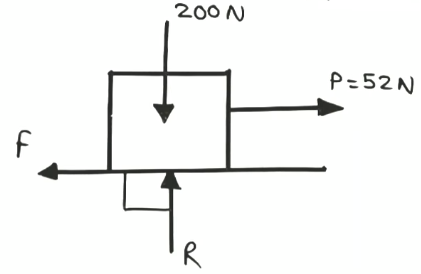
⇒ →+ve∑Fx = 0
⇒ 52-F = 0
⇒ ∴ F = 52N
⇒ ↑+ve∑Fy = 0
⇒ R-200 = 0
⇒ R = 200N
Now, frictional force
⇒F = μR
⇒ ∴ μ = F/R = 53/200 = 0.26A Ans
Q⪢A block of weight 200 N rest on a rough horizontal surface.
Find the magnitude of the force to be applied at an angle of 30 degree to
the horizontal in order to move the block on the surface. Assume u= 0.30

Sol -
Free body diagram of block-

⇒ →+ve∑Fx = 0
⇒ Pcos30° - F = 0
⇒ Pcos30° - μR = 0
⇒ Pcos30° - 0.3R = 0 --------eq1
⇒ ↑+ve∑Fy = 0
⇒ Psin30° + R -200 = 0
⇒ Psin30° + R = 200 --------eq2
From eq1 and eq2, we get
⇒ P = 59.053N Ans
⇒ R = 170.473N Ans
Q⪢Find the value of weight "W", If the body is in limiting
equilibrium condition.

Sol -
Free body diagram of block-

⇒ →+ve∑Fx = 0
⇒ F - 500cos30° = 0
⇒ F - 433.012 = 0
⇒ F = 433.012N
Frictional force,
⇒ F = μR
⇒ ∴ R = F/μ = 1732.048N
⇒ ↑+ve∑Fy = 0
⇒ -W + R - 500sin30° = 0
⇒ -W + 1732.048 - 250 = 0
⇒ -W + 1482.048 = 0
⇒ ∴ W = 1482.048N Ans
Q⪢A block of weight 500 N is resting on the incline plane making an
angle of 20 degree to the horizontal. Calculate the value of force P applied parallel
to the plane to just move the block up the plane if the coefficient of friction is
0.14
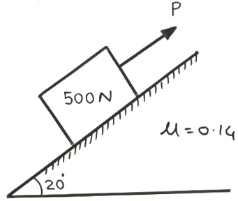
Sol -
Free body diagram of block-
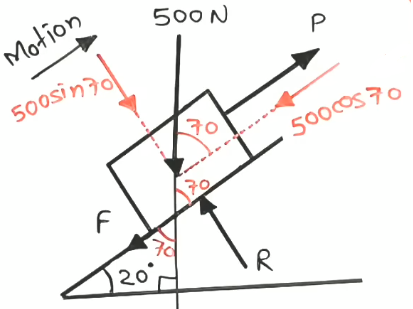
⇒ ↑+ve∑Fy = 0
⇒ R - 500sin70° = 0
⇒ R - 469.846 = 0
⇒ R = 469.846N
Frictional force,
⇒ F = μR
⇒ ∴ F = 0.14x469.846 = 65.778N
⇒ →+ve∑Fx = 0
⇒ P - F - 500cos70° = 0
⇒ P - 65.778 - 500cos70° = 0
⇒ P - 236.788 = 0
⇒ ∴ P = 236.788N Ans
Q⪢A block of mass 200 N resting on a horizontal surface supports another
block of 100 N as shown in figure. The smaller block is attach to the string from the
wall. Find the horizontal force P just to move the 200 N block to the left. Coefficient
of friction is 0.35 for all the rubbing surfaces.
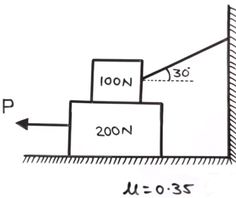
Sol -
Free body diagram of 100N block-

⇒ →+ve∑Fx = 0
⇒ Tcos30° - F2 = 0
⇒ Tcos30° - μR2= 0
⇒ Tcos30° - 0.35R2= 0 --------eq1
⇒ ↑+ve∑Fy = 0
⇒ Tsin30° + R2 - 100 = 0
⇒ Tsin30° + R2 = 100 --------eq2
From eq1 and eq2, we get
⇒ T = 33.62N
⇒ R2 = 83.189N
Free body diagram of 200N block,

⇒ ↑+ve∑Fy = 0
⇒ R1 - R2 - 200 = 0
⇒ R1 - 83.189 - 200 = 0
⇒ R1 = 283.189N
⇒ →+ve∑Fx = 0
⇒ -P + F1 + F2 = 0
⇒ -P + μR1 + μR2 = 0
⇒ -P + 0.35x283.189 + 0.35x83.189 = 0
⇒ ∴ P = 128.232N Ans
Q⪢The body on the incline plane is subjected to the vertical and the
horizontal forces as shown in figure. Find the component of each force along X and
Y axis, oriented parallel and perpendicular to the incline plane.

Sol -
Free body diagram of 100N block-

From the fig.
x component of force P = -Pcos53.13
x component of force P = -1200cos53.13
x component of force P = -720N Ans
y component of force P = -Psin53.13
y component of force P = -1200sin53.13
y component of force P = -960N Ans
Now,
x component of force F = Fcos36.869
x component of force F = 400cos36.869
x component of force F = 320N Ans
y component of force F = -Fsin36.869
y component of force F = -Fsin36.869
y component of force F = -240N Ans
Q⪢One end of a uniform ladder weights 30 N rest against a smooth wall and the other end on the
rough horizontal floor. Coefficient of friction is 0.24. Find the inclination of ladder to the
horizontal when it is on the point of slipping.

Sol -
Free body diagram of ladder-
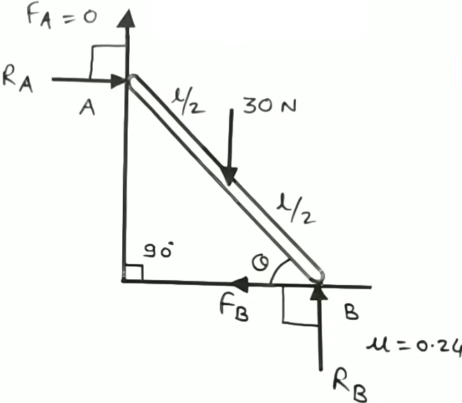
⇒ ↑+ve∑Fy = 0
⇒ RB - 30 = 0
⇒ RB = 30N
Frictional force,
FB = μRB
⇒ FB = 0.24 x 30 = 7.2N
⇒ →+ve∑Fx = 0
⇒ RA - FB = 0
⇒ RA - 7.2 = 0
⇒ RA = 7.2N
⇒ ↻+ve∑MB = 0
⇒ RA x lsinθ - 30 x l/2cosθ = 0
⇒ 7.2 x lsinθ - 15 x lcosθ = 0
⇒ 7.2 x lsinθ = 15 x lcosθ
⇒ 7.2 x sinθ = 15 x cosθ
⇒ sinθ/cosθ = 15/7.2
⇒ tanθ = 15/7.2
⇒ θ = tan-1(15/7.2) = 64.358 Ans
Q⪢
A uniform ladder of length 5 m and weights 400 N is placed against a smooth vertical wall with
its lower end 4 m from the left wall. In this position the ladder is just to slip. Determined
1) The coefficient of friction between the ladder and the floor.
2) Frictional force acting on the ladder at the point of contact between the ladder and the floor.

Sol -
Free body diagram of ladder-

⇒ ↑+ve∑Fy = 0
⇒ RB - 400 = 0
⇒ RB = 400N
⇒ ↻+ve∑MB = 0
⇒ RA x 5sinθ - 400 x 2.5cosθ = 0
⇒ RA x 5sinθ = 400 x 2.5cosθ = 0
⇒ RA = (400 x 2.5cosθ)/5sinθ
⇒ RA = {400 x 2.5cos(36.869)}/5sin(36.869)
⇒ RA = 266.675N
⇒ →+ve∑Fx = 0
⇒ RA - FB = 0
⇒ RA = FB
⇒ RA = 266.675N
Frictional force,
FB = μRB
⇒ μ = FB / μRB
⇒ μ = 266.675/400
⇒ μ = 0.666 Ans
Q⪢The ladder AB shown in fig weights 200 N. The coefficient of friction between
the ladder and the wall is 0.2 and between the ladder and the floor is 0.5. Determine the force
P applied horizontally at the bottom to just produce motion to the left.

Sol -
Free body diagram of ladder-
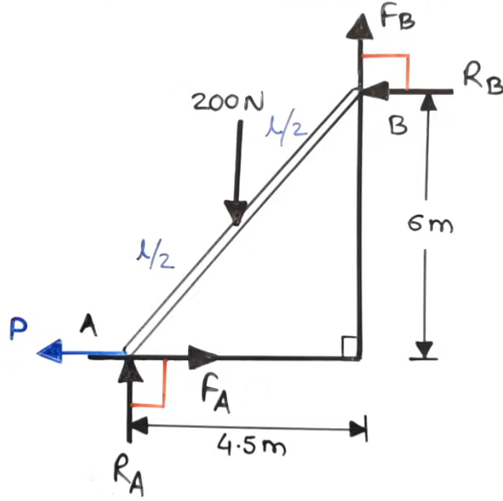
⇒ ↻+ve∑MA = 0
⇒ - FB x 4.5 - RB x 6 + 200 x 4.5/2 = 0
⇒ - μBRB x 4.5 - RB x 6 + 200 x 2.25 = 0
⇒ (-0.2 x 4.5 - 6)RB + 450 = 0
⇒ -6.9RB = -450
⇒ RB = 65.217N
⇒ ↑+ve∑Fy = 0
⇒ RA + FB - 200 = 0
⇒ RA + μBRB - 200 = 0
⇒ RA + 0.2 x 65.217 - 200 = 0
⇒ RA -186.956 = 0
⇒ RA = 186.956N
⇒ →+ve∑Fx = 0
⇒ -P + FA - RB = 0
⇒ -P + μAFA - 65.217 = 0
⇒ P = 0.5 x 186.956 - 65.217
⇒ P = 28.261N Ans